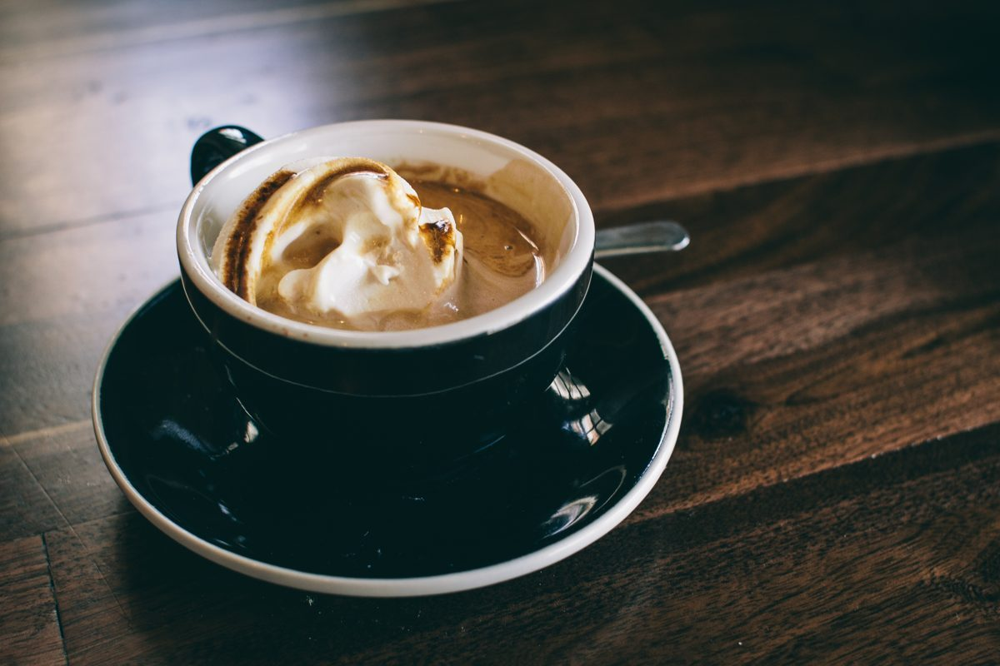

写真はコーヒーとカフェまわりのイメージです。お店のものではなく、お店で提供している商品を示すものでもありません。
制作側の連想
紛失防止タグの部位を、配置図にしてみる
このサイトは、鍵やかばんに付けて探しものを見つけやすくする小さな「紛失防止タグ」を図にしたつもりで作りました。六つの部位に番号をふり、上の図と並べています。制作側の連想で、お店の理念・由来とは無関係です。実際の製品の仕様を示すものでもありません。
凡例
六つの部位
- 1ストラップ穴キーホルダーやひもを通すための小さな穴。本体の端に付きます。
- 2本体ケース部品全体を包む、丸みのある外側の殻。
- 3電池カバーひねって外すふた。裏側の中央にあります。
- 4ボタン電池コインのように平たい、丸い電池。+の面を上にして収めます。
- 5スピーカー穴小さな穴が並んだ部分。音が外に抜ける出口です。
- 6アンテナ(配線パターン)内側の基板に沿う細い線。電波をやりとりする部分です。


写真は、パンやコーヒー豆などのイメージです。お店のものではありません。